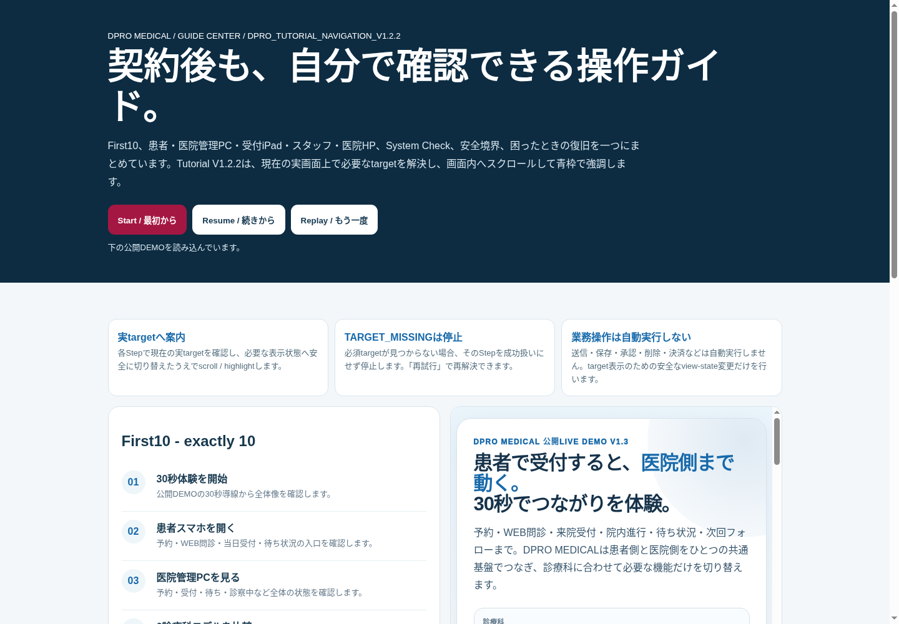
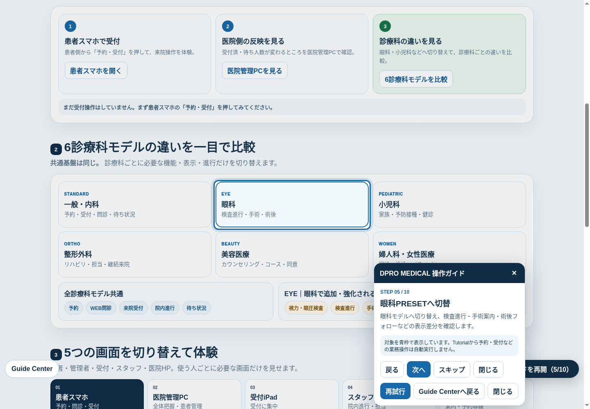

DPRO MEDICAL / QUICK START / TUTORIAL NAVIGATION V1.2.2
まずはFirst10で、
現在の実画面を確認。
Guide CenterからStart / Resume / Replayを使い、患者・医院管理PC・受付iPad・スタッフ・医院HPと6診療科モデルを確認します。Tutorialは各Stepの実targetを解決し、必要な表示状態へ安全に切り替えてscroll / highlightします。
Guide Center V1.2.2guide-center.html
公開LIVE DEMOmedical-public-demo.html

公開DEMOは架空データのみを使用します。実患者データ・認証情報・秘密情報は入力しません。Tutorialは説明・案内レイヤーで、送信・保存・承認・削除・決済などの業務操作を自動実行しません。
FIRST10 / EXACTLY 10
見る順番は、正確に10ステップ。
Back / Nextで前後しながら、実targetが青枠で表示されることを確認します。Step 05以降ではtargetを見せるためのPRESET・roleの安全なview-state変更を行いますが、business mutationは発生させません。
0130秒体験を開始
公開DEMOの30秒導線を確認。
02患者スマホを開く
予約・問診・受付の入口。
03医院管理PCを見る
患者側と医院側のつながり。
046診療科モデルを比較
共通基盤と差分を比較。
05眼科PRESETへ切替
検査進行・手術案内・術後。
06患者画面の役割を確認
患者向け入口を確認。
07医院管理PCの役割を確認
全体把握を確認。
08受付iPadの役割を確認
受付業務へ集中。
09スタッフ画面の役割を確認
院内進行・担当。
10医院HPの公開境界を確認
公開可能情報を確認。

詳細操作マニュアルDPRO_TUTORIAL_MEDICAL_DETAILED_MANUAL_V1.2.2.pdf
実target / scroll / highlight
対象が画面外なら見える位置へ移動し、青枠で強調します。対象そのものを勝手に業務実行することはありません。
START / RESUME / REPLAY / RECOVERY
進捗は保持。見つからなければ止める。
操作の意味
Start - Step 1から開始。
Resume - 保存済みの正確なStepと必要表示状態から再開。
Replay - Tutorial進捗だけをStep 1へ戻す。
Back / Next - 必須Step間を移動。
Close / Esc - 閉じても進捗を保持。
TARGET_MISSING
必須targetが見つからない場合、そのStepは成功扱いになりません。
Retry / 再試行 - target解決をもう一度試します。
Guide Centerへ戻る - 操作説明へ戻って復旧。
解決しない場合はSystem Checkを確認し、本番操作を進めません。
System Checksystem-check.html
復旧操作でも、Tutorialが業務データを保存・送信・承認・削除・決済することはありません。診療判断・医療記録・個人情報の取扱いは契約医療機関の運用規程に従ってください。